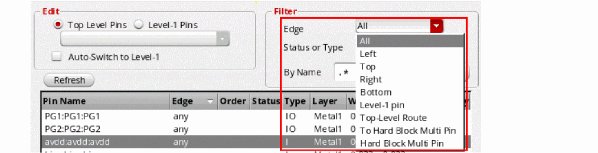
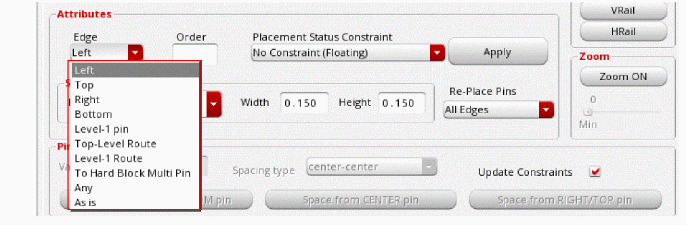
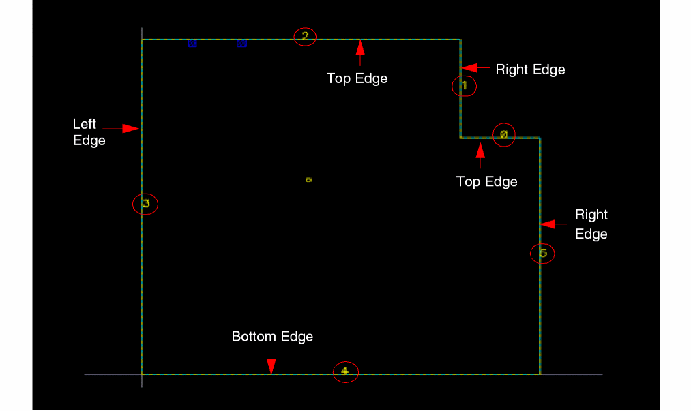
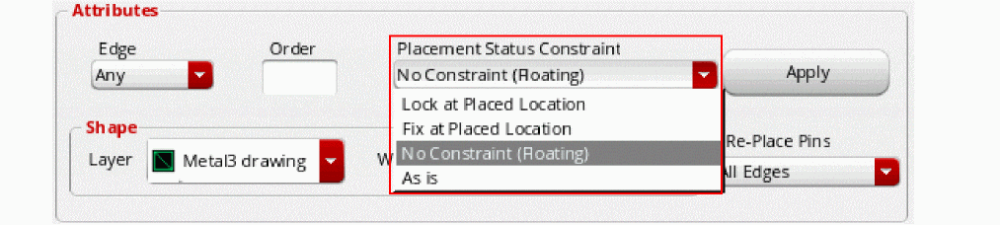

Placing a Pin on a Boundary Edge
To place a pin in a fixed position on the boundary,
-
From the layout window menu bar, choose Floorplan – Pin Planner.
The Pin Placement form is displayed. -
Choose Unplaced from the Status or Type drop-down list.
 -
Select the pin you want to place from the pin table.
You can expand iterated bus pins (for example,A<7:0>) using the Expand button in the Iterated Pins group box. This expands the bus into individual pins, which you can then place individually with different constraints.Use the enableNoPinsBetweenBusPins environment variable to disable placement of other pins between bus pins. -
From the Edge drop-down list, choose the edge on which the selected pins are to be placed. For rectangular boundaries, the edge sides are listed as Left, Top, Right, Bottom, Level-1 pin, Top-Level Route, To Hard Block Multi Pin, Any, and As is.
For rectilinear boundaries, both the edge numbers and the edge sides are listed.
Edge numbers are assigned in the increasing order, starting with zero, which is assigned to the edge at the right-top vertex, followed by the adjoining edge in the anti-clockwise direction.
An edge side for rectilinear boundaries may correspond to one or more edges. In the above example, the "Top" edge side can correspond to edge numbers0or2. Therefore, Pin Planner has a choice of edges.The alignment Edge/Side constraint is disregarded and a warning message is displayed in the following situations:- Situation 1 - Edge number is specified for a cell with a rectangular boundary.
- Situation 2 - The specified edge does not have enough available slots.
- Situation 3 - The PR boundary is not a member of the alignment constraint.
For situations 1 and 2, although the alignment Edge/Side constraint is disregarded, the pitch value, if set, is honored. For situation 3, however, the pitch value is not honored. -
Choose Fix at Placed Location from the Placement Status Constraint drop-down list.
Fix at Placed Location places the pin at a location on the boundary and then fixes the pin at that location, meaning that it cannot be moved by the automatic placement functions; however, you can move it manually, for example, using the Edit – Move command. -
Click Apply to align the pin to the specified boundary edge in the layout.If required, use the Re-Place Pins pull-down to limit the pins that can be moved by the placer when you click Apply.The Status field is updated in the pin table and the label in the Placement Status Constraint field changes to show the coordinates of the center of the pin.
- Repeat step 3 through step 6 for each pin you want to place on the boundary.
- Click Close to close the Pin Placement form.
Related Topics
Planning Placement of Top-Level and Level-1 Pins
Return to top